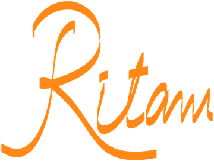

The Mind in the Light of Modern and Spiritual Sciences · Advanced
A light bulb and a laser can use the same amount of energy. “Same energy. Utterly different effect. The difference is coherence” (§3). Here you bring scattered waves into line, then let a group of oscillators fall into step through coupling, with and without a steady source.
Part I is practice and is not scored. Part II is scored: only its five questions count, and your first pick on each counts.
Each lamp sends out a wave of the same frequency and the same strength. When their phases are scattered, their peaks reach the spot at different moments. Move the slider to bring the phases into line and watch the spot where the waves meet. The energy put in does not change.
The brightness bar is averaged over a few seconds. Its marks show the average for scattered phases and for aligned ones; with two waves, the first mark is either wave alone. The page shows these in words, not figures.
Every lamp in the aligned row is still waving; only the timing of the waves has changed. In the lesson’s own practice: “This is coherence: not the absence of thought or feeling or sensation, but their alignment and coordination” (§9).
Ten oscillators, each with a natural pace of its own close to the others, run round a circle. Coupling lets each one feel the pull of the rest. Raise it and watch whether they fall into step. Then add a steady source that keeps its own rhythm, calm or agitated, and an oscillator whose pace is far from the rest. Only the five questions below are scored.
This is a generic model of coupled oscillators, not a model of nervous systems or of any person. “Steady” here means that the source keeps its own rhythm and is not pulled by the group. The lesson applies the principle of entrainment to wise company and to groups (§5, §7); the model shows only the principle.
Pick one answer.
“The power of the collective field is neutral. It amplifies whatever frequency is present. So it is crucial to ensure that what is being amplified is truthful, ethical, and life-serving” (§7). The lesson gives the dark side plainly: “A mob locked in fear or rage creates a collective field that is terrifying” (§7). And the bright side as plainly: “Used wisely, it is one of the most transformative forces available” (§7).
“The coherent state is not itself the recognition of the deepest Self; it is the condition of the instrument that allows that recognition to dawn” (§4).